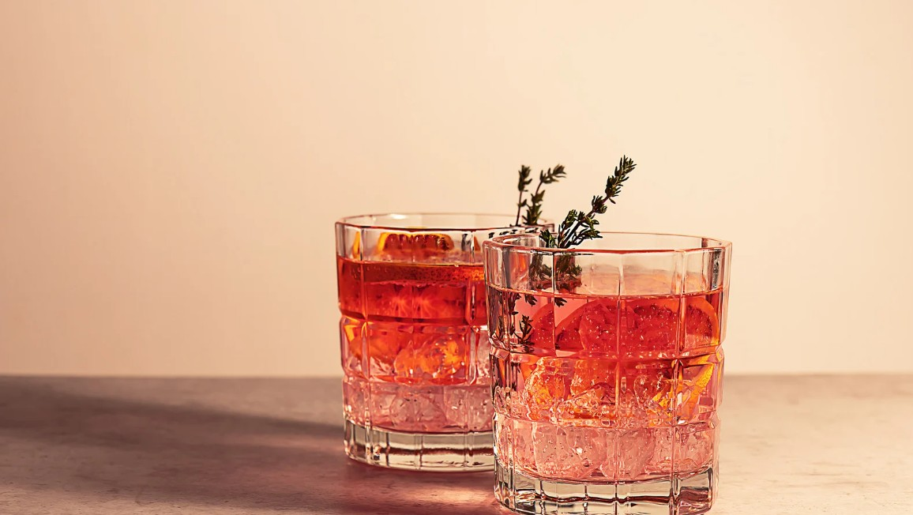
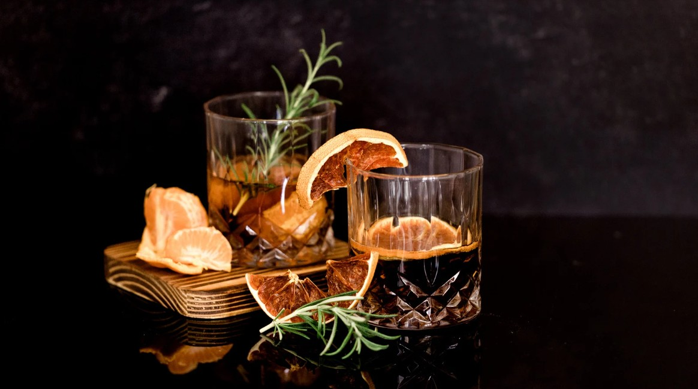

Pineapple margarita
A tropical twist on the classic, the Pineapple Margarita combines sweet, juicy pineapple with zesty lime and tequila. Perfect for sunny afternoons, beach vibes, or anyone who loves a refreshing, fruity cocktail with a bright kick.

Rhubarb spritz
Light, crisp, and slightly tart, the Rhubarb Spritz is ideal for spring and summer gatherings. With its delicate sweetness and bubbly finish, it’s perfect for brunches, garden parties, or anyone who prefers a fresh and elegant aperitif.

Negroni
Bold, bitter, and beautifully balanced, the Negroni is a timeless classic. Best suited for relaxed evenings or pre-dinner sipping, it’s the go-to choice for those who appreciate complex flavors and a sophisticated cocktail experience.